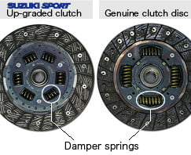

-
Do you think vibration produced by engine oscillation may cause damage to your driveline components over time?. After doing a bit of research, I can see how it could affect driveline components. Prashant Kulkarni, engineering-manager of the Clutch Division at Eaton Corp stated, "All of these engines create different firing pulses in order to operate and it is those pulses that cause oscillations and subsequent vibration." That vibration then moves throughout the entire driveline, âthrough the clutch, the transmission, down the driveshaft and to the axles.â If vibration gets to be excessive it can break components like synchronizer pins, transmission and U-joint gears, he explains. âIt can even [impact] gears down in the axle or any other component that is directly in the torque path of the driveline.âKulkarni goes onto say, "the damper in the clutch has to be precisely designed, and, in fact, is the most critical part of a clutch."
The stiffness of the clutch damper has an impact on the whole driveline. Kuklarni uses a broomstick and slinky to make his point. If Iâm holding a broomstick on one end and someone else is holding it on the other end and I shake my end, the other person will feel every oscillation.â But, with the slinky the other person won't feel the oscillations because the slinky acts like a soft spring.
He quickly adds while a damper isn't as soft as a slinky, "It has to have enough travel designed into it to soften or dampen torsional vibration yet be strong enough to absorb the torque required to power the driveline.â
Keep in mind no one clutch fits all engines. He further explains that you have to find the right cushioning balance. Factors include:- The amount of torque from the engine the driveline needs to support
- The appropriate stiffness/softness of the damper to isolate the vibration energy coming from the engine
- Determining the correct size damper to accommodate the number of springs needed
- The amount of friction material needed to maximize wear life.
So, it seems to me that the clutch damper is a critical component of clutches and drivelines to prevent damage to the driveline from the natural resonance created by engine oscillation. You need the damper to cushion the effect of the vibrations in order to prevent damage to your driveline componnents (synchronizer pins, transmission and U-Joint gears among some things. -
I think that's referring the springs in the clutch itself, not to the damper located in the hydraulic line. It may even refer to the center section of the clutch disc. The damper in the hydraulic line has only to do with the motion of the clutch engagement. Once the clutch pedal is released and the disc is in contact with the flywheel, it has no effect on the driveline.
Off the net:
-
 #17.1Dunkine commentedAdditional info off wiki:
#17.1Dunkine commentedAdditional info off wiki:
"Dampers
A clutch damper is a device that softens the response of the clutch engagement/disengagement. In automotive applications, this is often provided by a mechanism in the clutch disc centres. In addition to the damped disc centres, which reduce driveline vibration, pre-dampers may be used to reduce gear rattle at idle by changing the natural frequency of the disc. These weaker springs are compressed solely by the radial vibrations of an idling engine. They are fully compressed and no longer in use once the main damper springs take up drive."
This is specifically referring to the center section of the clutch, not the hydraulic line damper which only effects pedal feel / how fast the fluid is transferred to slave cylinder. -
Just to clarify:
Damper in the center of the clutch disc = good
Damper in the hydraulic line = optional
-
-
Yeah good info Daniel but we're talking about a different peice.Comment
-
We were talking about the clutch damper not the damper springs in the clutch disc itself. I thought the article I read was related to the clutch damper. The clutch damper does just what Dunkine found on the wiki. It softens the response of the clutch engagement and disengagement. If you're swapping to a manual transmission as I am, I recommend installing that part, or the driver side front brake hose for a 1982 280zx if you can't find one cheap from the dealer.Last edited by daniel_pearce; 10-30-2017, 10:35 PM.
-

Copyright © 2006–. All rights reserved. Privacy Policy
Comment